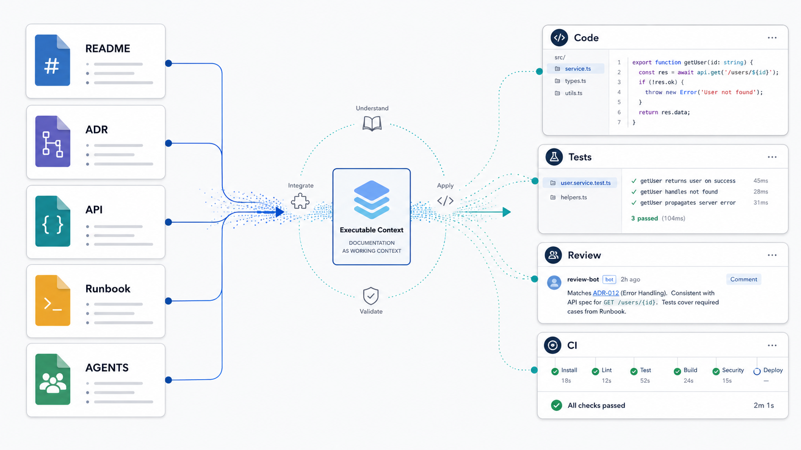
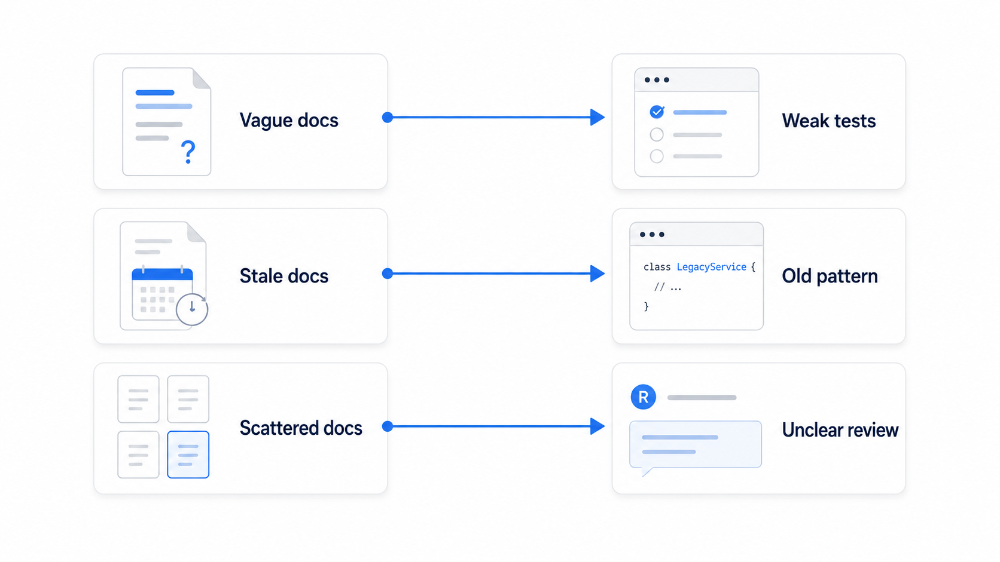
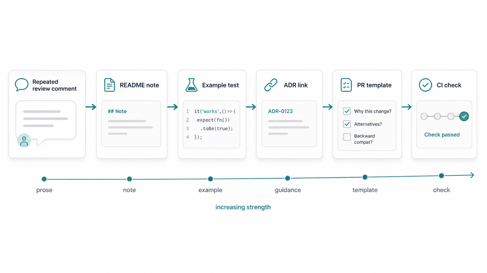

The old README did not just confuse the developer. It changed the code the assistant wrote.
A team asked an AI coding assistant to add a new endpoint to an internal service. The code was easy enough to follow. The README explained how to run the app. The nearby tests showed a simple request and response pattern.
The assistant followed what it could see. It generated the handler, added happy-path tests, and updated a small doc section.
The pull request looked reasonable until review.
The endpoint skipped the contract test required for public API changes. It used an old retry pattern that had been replaced after an incident. It crossed a service boundary explained in an ADR, but that ADR was not linked from the repository. The real rollout rule lived in a runbook that was not connected to the ticket.
The assistant did not invent those gaps.
It worked from the documentation, examples, and files that reached the task.
That is why documentation is starting to matter in a different way. It is no longer only a passive reference for humans. In AI-assisted workflows, documentation can shape code generation, test creation, review reasoning, task decomposition, and implementation decisions.
Documentation is becoming executable context.
Not executable in the same sense as source code. A README does not compile. An ADR does not enforce an architecture boundary by itself. A runbook does not guarantee safe operations.
But documentation increasingly participates in the delivery path. It is read by tools. It is retrieved into prompts. It is used by assistants to choose local patterns. It is converted into tests, templates, checks, and review gates. It affects the quality of the work that follows.
That makes documentation quality a delivery concern.
Documentation used to arrive late
In many teams, documentation has traditionally been something people consult after the real work has already started.
A developer gets stuck and reads the README. A new engineer opens the onboarding guide. A reviewer links an ADR after a pull request goes in the wrong direction. Someone checks a runbook during an incident. A platform engineer points to the API standard after the implementation already exists.
That pattern was never ideal, but human teams could work around it. People asked in chat. Reviewers remembered old decisions. Senior engineers corrected direction. Product managers explained exceptions. Operations filled in production details.
AI-assisted work changes the timing.
An assistant may read repository instructions before writing code. A coding tool may use examples from tests and README files. A review assistant may reason from an API spec, ADR, or pull request template. An agent may use runbook steps while proposing a fix. A test-generation workflow may infer edge cases from documented behavior.
Documentation can now arrive before the first draft of the code.
That is useful when the documentation is clear, current, and close to the work. It is risky when the documentation is vague, stale, scattered, or contradictory.
DORA's guidance on AI-accessible internal data points in this direction: AI tools become more useful when they can work with relevant internal context such as codebases, documentation, style guides, architecture diagrams, and operational information. DORA's work on documentation quality emphasizes clarity, findability, and reliability. Those qualities matter because documentation is no longer only helping someone understand the system later. It may shape the first version of the change.
How documentation shapes AI-assisted work
Consider a few ordinary artifacts.
A README.md often tells people how to build, test, configure, and run a service. If it says "run unit tests" but the real expectation for API changes includes contract tests, generated clients, and backward compatibility checks, an assistant may produce a change that looks locally correct but misses the real delivery standard.
An ADR explains why a team chose one architecture path over another. Martin Fowler describes an Architecture Decision Record as a short document that captures a decision, its context, and its consequences. That context matters when old code and new standards coexist. If the ADR is findable and linked from the relevant module, it can help both humans and assistants avoid copying a pattern that still compiles but no longer represents the intended design.
An API specification describes contracts other teams depend on. If the spec is current, it can guide implementation and tests. If it is stale, it becomes dangerous context. A tool may treat it as authority because it looks structured and official.
A runbook captures operational behavior. It may explain retry rules, rollout steps, dashboards, alerts, or failure modes that are not obvious from code. If an agent uses that runbook during a production-adjacent task, the quality of the runbook affects the safety of the proposed action.
Repository instructions are even more direct. GitHub documents repository custom instructions for Copilot as a way to give project-specific guidance. Codex-style agent workflows can use instruction files such as AGENTS.md. Other tools have similar project memory or instruction mechanisms.
These files can tell an assistant how to build the project, which tests to run, which generated files to avoid editing, which libraries to prefer, and which architecture boundaries matter.
This is useful, but it should stay in perspective.
Instructions guide behavior. They do not prove correctness.
The assistant may miss something. Retrieval may surface the wrong file. The instruction may be outdated. The tool may follow wording too literally. The generated code still needs review, tests, security checks, and production ownership.
The point is not that documentation controls AI.
The point is that documentation now has a stronger path into implementation.
Bad documentation becomes bad context
Poor documentation has always been expensive. AI-assisted work makes some of the cost faster and less visible.

The most common failure is vague documentation.
"Add good tests" is not a standard. It is a hope.
If the team expects validation failures, permission failures, idempotency, downstream timeouts, and backward compatibility cases, say that. Better, point to example tests that show the shape. A human can ask follow-up questions. An assistant may simply generate tests that match the visible examples.
Stale documentation is worse.
An old page can look more authoritative than current team memory. A deprecated API pattern may be documented better than the new pattern. An old ADR may be indexed while the superseding decision is hidden in a meeting note. In that case, AI does not just suffer from missing context. It receives misleading context.
Scattered documentation creates another problem.
The README says one thing. The wiki says another. The API spec is almost current. The runbook contains the real production rule. The ticket links none of them. A human may know which source to trust. An assistant may not.
Then there is documentation that is too far from the workflow.
If a rule affects implementation, but lives only in a central knowledge base, it may arrive too late. If every public API change needs contract tests, that expectation should appear near the code, in the PR template, in test examples, or in CI feedback. If a service boundary matters, the ADR should be linked from the module where people are tempted to cross it.
The problem is not that teams need more pages.
The problem is that important context often has no reliable path into the work.
Move documentation closer to execution
Useful documentation is not only well written. It is well placed.
Put setup and test commands where developers and assistants start: the README, contributing guide, repository instructions, or project-specific agent files.
Put behavior examples where implementation happens: tests, fixtures, API examples, sample payloads, and contract files.
Put decision context where future changes will touch it: ADRs linked from modules, service READMEs, architecture indexes, and pull request templates.
Put review expectations where review happens: PR templates, code owner rules, review checklists, and CI status messages.
Put operational lessons where production risk is handled: runbooks, deployment notes, alert descriptions, rollback steps, and incident follow-up tasks.
Some documentation should become stronger than prose.
If a rule is stable, repeatable, and cheap to check, encode it as a test, linter rule, schema validation, generated-code drift check, dependency rule, architecture boundary check, or CI gate. The written rule explains intent. The executable check gives feedback.
This is where documentation and process as code meet.
A repeated review comment might start as a sentence in a PR checklist. Then it becomes an example test. Later it becomes a CI check. The original documentation still matters because it explains why the check exists, when it applies, and who owns it.

The goal is not to turn every paragraph into automation.
The goal is to give important knowledge the right form.
Make documentation easier to use
AI tools do better with documentation that has clear shape. Humans do too.
That does not mean every team needs a knowledge graph or a formal taxonomy. It means ordinary engineering documents should answer ordinary questions clearly.
A useful README says what the service owns, how to run it, which tests matter, which examples are current, which files are generated, and where the relevant ADRs, specs, and runbooks live.
A useful ADR says what decision was made, what context led to it, what alternatives were considered, what consequences follow, whether it has been superseded, and which code areas it affects.
A useful repository instruction file says what an assistant should know before editing: build commands, validation commands, unsafe files, testing expectations, architecture boundaries, and areas that require human review.
A useful PR template asks what changed, why it changed, how it was tested, what risks exist, and whether contracts, docs, migrations, or runbooks changed.
This structure does not need to be heavy. It just needs to make the important context easier to find, trust, and apply.
The documentation chapter in Software Engineering at Google makes a practical point that fits here: documentation works better when it has ownership, maintenance, and a canonical place in the engineering workflow. That matters even more when tools may retrieve and reuse the document later.
Do not document everything
The wrong response is to create a giant documentation program.
More documentation can make AI-assisted work worse if it creates stale, conflicting, unowned text. Retrieval systems can surface old guidance with confidence. Assistants can summarize irrelevant documents. Developers can waste time deciding which source is current.
Document the knowledge that changes delivery outcomes.
Good candidates include:
- rules reviewers explain repeatedly
- edge cases that affect tests
- architecture decisions future contributors will touch
- API contracts other teams depend on
- security and privacy expectations
- operational rules learned from incidents
- build, validation, and release steps
- generated files and unsafe edit paths
Some knowledge should stay human judgment. Some is too sensitive for broad tool access. Some is still changing and belongs in active design discussion before it becomes a durable artifact.
Good documentation has ownership. Someone can update it, mark it stale, archive it, or connect it to a newer decision. Without ownership, documentation slowly turns from context into noise.
Three practical takeaways
First, treat documentation quality as delivery quality when AI tools use it as context. A vague README, stale ADR, or disconnected runbook can shape generated code and tests.
Second, put important documentation closer to the workflow. The right place might be a README, test example, API spec, ADR link, PR template, CI message, runbook, or repository instruction file.
Third, convert stable rules into stronger artifacts. Keep prose for context and intent, but use tests, schemas, checks, templates, and review gates when a rule is repeatable and important.
The next documentation bug
The next time a review comment says, "The assistant should have known this," pause before only fixing the code.
Ask a few questions.
Where did that knowledge live? Was it current? Was it findable? Was it close enough to the work? Was it written as a vague preference, or as a concrete expectation? Should it be an example, a test, a PR question, an ADR link, a runbook update, or a CI check?
This habit matters because documentation is no longer only the thing people read after they are confused.
In AI-assisted engineering, documentation can become part of the path that produces the first draft, the tests, the review, and sometimes the agent's next action.
That does not make documentation magical.
It makes it operational.
If documentation shapes the work, unclear documentation shapes the work badly. Current, specific, well-placed documentation gives both humans and assistants a better view of the system.
Documentation quality has always mattered.
Now it is becoming directly connected to delivery quality.